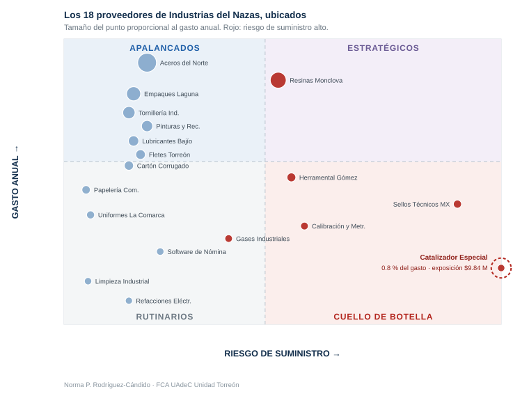

El proveedor más barato que puede parar la planta
🎯 El gancho
El proveedor que ocupa el lugar 16 de 18 en la clasificación ABC —0.8 % del gasto, $185,000 al año— tiene una exposición de $9,840,000 si falla. Cincuenta y tres veces lo que se le compra. Es fuente única y tarda veinticuatro semanas en sustituirse.
Cuatro de cada cinco equipos propondrán recortarlo, porque el asistente de IA se los va a sugerir.
Cómo usar este ejercicio en clase
La guía para el profesor —preparación, cronograma minuto a minuto, frases sugeridas y qué hacer si se acorta el tiempo o no hay IA en el salón— está en GUIA-DOCENTE.md. Materiales listos para usar en clase:
| Archivo | Qué es | Uso |
|---|---|---|
GUIA-DOCENTE.md |
Guía completa del profesor, con la solución | Solo el profesor |
materiales/01-caso-alumno.md |
Caso para el alumno, sin solución | Se imprime y se reparte |
materiales/02-hoja-de-trabajo.md |
Hoja de trabajo con las tablas por llenar | Se imprime, una por equipo |
materiales/03-prompts.md |
Prompts listos para copiar y pegar | Se comparte en digital |
materiales/04-rubrica.md |
Rúbrica de evaluación | Se comparte con los alumnos al inicio |
materiales/datos.csv |
Datos del caso, para pegar en la IA o abrir en Excel | Se comparte en digital |
materiales/matriz-vacia.svg |
Matriz en blanco para trabajar en equipo | Se imprime, una por equipo |
materiales/matriz-resuelta.svg |
Matriz con los proveedores ubicados | Profesor, para la plenaria |
materiales/tablero-proveedores.html |
Tablero de referencia ya funcionando (HTML) | Profesor, para la plenaria |


Objetivo de aprendizaje
Al terminar este ejercicio, el alumno podrá construir una clasificación ABC del gasto por proveedor y contrastarla contra una clasificación de riesgo de suministro; verificar críticamente si el asistente de IA confundió volumen de compra con importancia estratégica; y fundamentar una decisión de abastecimiento comparando el gasto anual de un proveedor contra la exposición económica que representa.
Teoría
⚠️ Nota de transparencia: redacción base del profesor; desarrollo de la matriz de posicionamiento, construcción del caso y guía de solución con apoyo de IA. Pendiente de revisión docente.
El análisis ABC del gasto
El análisis ABC, derivado del principio de Pareto, ordena a los proveedores de mayor a menor gasto anual y los agrupa en tres categorías según el porcentaje acumulado:
- Categoría A: proveedores que concentran aproximadamente el primer 80 % del gasto.
- Categoría B: los que llevan del 80 % al 95 %.
- Categoría C: el resto.
Su utilidad es clara: indica dónde concentrar el esfuerzo de negociación, porque un punto porcentual arrancado a un proveedor de categoría A vale más que una renegociación completa con uno de categoría C.
Su limitación también es clara, y es el objeto de este ejercicio: el ABC mide una sola dimensión. Un proveedor puede representar el 0.5 % del gasto y ser, al mismo tiempo, el único del mercado capaz de surtir una pieza sin la cual la línea se detiene. En la clasificación por gasto aparecerá en el último lugar.
El riesgo de suministro como segundo eje
Peter Kraljic propuso en 1983 cruzar el gasto con una segunda dimensión —el riesgo de suministro— y obtener cuatro cuadrantes con estrategias distintas:
| Riesgo de suministro bajo | Riesgo de suministro alto | |
|---|---|---|
| Gasto alto | Apalancados. Hay competencia: negociar precio, licitar, consolidar volumen. | Estratégicos. Relación de largo plazo, contratos, desarrollo conjunto, planes de contingencia. |
| Gasto bajo | Rutinarios. Simplificar: catálogos, compra automática, reducir costo de gestión. | Cuello de botella. Asegurar el suministro: inventario de resguardo, segunda fuente, contrato. |
El riesgo de suministro se estima con tres variables observables:
- Número de fuentes alternativas calificadas que podrían surtir lo mismo.
- Semanas de resustitución: cuánto tardaría la empresa en homologar y poner a producir a un proveedor alterno.
- Efecto de la interrupción: ninguno, menor, paro parcial o paro total de la línea.
El error que este ejercicio busca provocar es el siguiente: el cuadrante de cuello de botella es invisible para el ABC, porque está formado precisamente por los proveedores de gasto bajo. Quien clasifica solo por monto nunca lo ve, y la recomendación natural —"depuremos la cola de proveedores pequeños"— ataca justo ahí.
Ejercicio / caso práctico
Industrias del Nazas, S.A. de C.V. es una empresa metalmecánica de Torreón con 340 empleados. Compra a 18 proveedores por un total de $22,500,000 al año. Si la línea se detiene, la empresa deja de generar $410,000 semanales de margen de contribución.
| # | Proveedor | Gasto anual | Fuentes alternativas | Semanas de resustitución | Efecto si se interrumpe |
|---|---|---|---|---|---|
| 1 | Aceros del Norte | $4,820,000 | 4 | 2 | Menor |
| 2 | Resinas Monclova | $3,650,000 | 2 | 6 | Paro parcial |
| 3 | Empaques Laguna | $2,940,000 | 5 | 1 | Menor |
| 4 | Tornillería Industrial | $2,180,000 | 6 | 1 | Menor |
| 5 | Pinturas y Recubrimientos | $1,760,000 | 4 | 2 | Menor |
| 6 | Lubricantes del Bajío | $1,390,000 | 5 | 1 | Menor |
| 7 | Fletes Torreón | $1,120,000 | 4 | 1 | Menor |
| 8 | Cartón Corrugado | $940,000 | 6 | 1 | Menor |
| 9 | Herramental Gómez | $780,000 | 2 | 8 | Paro parcial |
| 10 | Papelería Comercial | $640,000 | 9 | 1 | Ninguno |
| 11 | Sellos Técnicos MX | $510,000 | 1 | 16 | Paro total |
| 12 | Uniformes La Comarca | $430,000 | 7 | 1 | Ninguno |
| 13 | Calibración y Metrología | $360,000 | 2 | 10 | Paro parcial |
| 14 | Gases Industriales | $295,000 | 3 | 2 | Paro parcial |
| 15 | Software de Nómina | $240,000 | 4 | 4 | Menor |
| 16 | Catalizador Especial | $185,000 | 1 | 24 | Paro total |
| 17 | Limpieza Industrial | $150,000 | 8 | 1 | Ninguno |
| 18 | Refacciones Eléctricas | $110,000 | 6 | 1 | Menor |
Mandato de la dirección. A cada equipo se le asigna uno distinto:
| Equipo | Instrucción que recibió de la dirección |
|---|---|
| 1 | «Reduzcan el gasto de compras un 8 % este año.» |
| 2 | «Bajen de 18 a 12 proveedores para simplificar la administración.» |
| 3 | «Concentren las compras para ganar poder de negociación.» |
| 4 | «Prioricen proveedores locales de La Laguna.» |
| 5 | «Reduzcan a la mitad el riesgo de paro de línea sin aumentar el gasto más de 3 %.» |
Se pide (cinco pasos):
Paso 1 · Clasificar con la IA · 10 min
Entregable: la respuesta de la IA, copiada.
Abre Claude o ChatGPT y usa el prompt 1. Pégale solo tres columnas: proveedor, gasto anual y fuentes alternativas. No le des todavía las de semanas ni la de efecto.
Pídele la clasificación ABC y un plan para cumplir el mandato de tu equipo. Guarda la respuesta completa: la vas a necesitar en el paso 3.
Paso 2 · Comprobar el supuesto de Pareto · 5 min
Entregable: una cifra.
La IA casi siempre afirma que «el 20 % de los proveedores concentra el 80 % del gasto». Calcúlalo tú con estos datos:
- Ordena los 18 de mayor a menor gasto.
- Toma los primeros cuatro (el 20 % de 18, redondeado).
- Suma su gasto y divídelo entre $22,500,000.
Escribe el porcentaje real y compáralo con lo que afirmó la IA.
Paso 3 · Recibir el dato que faltaba · 10 min
Entregable: la tabla de abajo, llena.
El profesor te entrega ahora las dos columnas que no tenías: semanas de resustitución y efecto si se interrumpe. Usa el prompt 2 para devolvérselas a la IA y confrontar su propio plan.
| Proveedor que la IA propuso tocar | Categoría ABC | Fuentes | Semanas | Efecto | ¿Sigue en pie la recomendación? |
|---|---|---|---|---|---|
Responde por escrito: la IA nunca pidió esta información. ¿Por qué no la echó de menos?
Paso 4 · Construir el tablero · 15 min
Entregable: un archivo HTML que funcione.
Aquí no se llena una hoja: se construye una herramienta. Usa el prompt 3 para que la IA genere un tablero en un solo archivo HTML y ábrelo en el navegador.
El tablero debe permitir cambiar los umbrales —cuántas fuentes y cuántas semanas marcan riesgo alto— y recalcular todo al instante. Pruébalo:
- Con el umbral de 8 semanas, ¿cuántos proveedores quedan en cuello de botella?
- Bájalo a 5 semanas. ¿Cuántos quedan ahora? ¿Quién entró?
- Súbelo a 20. ¿Quién se queda solo en el cuadrante rojo?
El umbral no te lo da el enunciado: lo decides tú. Anota qué umbral propones para esta empresa y con qué argumento.
Puedes comparar tu resultado con materiales/tablero-proveedores.html. No es «la respuesta correcta»: es una versión de referencia. Si la tuya hace algo distinto y lo justificas, está bien.
Paso 5 · Decidir y presentar · 10 min
Entregable: 6–8 líneas y el tablero proyectado.
Reformula el mandato de tu equipo en una propuesta ejecutable, que incluya:
- Qué proveedores sí se tocan.
- Cuáles quedan intocables y por qué.
- Qué medida concreta propones para el cuello de botella más grave, con su costo aproximado.
- Qué umbral de riesgo fijaste y con qué argumento.
Plenaria. Cada equipo presenta su tablero y responde: ¿cuál de los cinco mandatos era el único que no llevaba a tocar un proveedor crítico?
Solución / guía de solución
Mostrar guía para el profesor
Clasificación correcta

| Cuadrante | Proveedores | Gasto | % del gasto |
|---|---|---|---|
| Apalancados | Aceros del Norte, Empaques Laguna, Tornillería Industrial, Pinturas y Recubrimientos, Lubricantes del Bajío, Fletes Torreón | $14,210,000 | 63.2 % |
| Estratégicos | Resinas Monclova | $3,650,000 | 16.2 % |
| Rutinarios | Cartón Corrugado, Papelería Comercial, Uniformes La Comarca, Software de Nómina, Limpieza Industrial, Refacciones Eléctricas | $2,510,000 | 11.2 % |
| Cuello de botella | Herramental Gómez, Sellos Técnicos MX, Calibración y Metrología, Gases Industriales, Catalizador Especial | $2,130,000 | 9.5 % |
Las categorías ABC quedan: A = los 7 primeros (79.4 % del gasto), B = del 8 al 12, C = del 13 al 18.
Exposición económica de los proveedores de riesgo alto
| Proveedor | ABC | Gasto anual | Exposición si se interrumpe | Razón exposición / gasto |
|---|---|---|---|---|
| Catalizador Especial | C | $185,000 | $9,840,000 | 53 × |
| Sellos Técnicos MX | B | $510,000 | $6,560,000 | 13 × |
| Calibración y Metrología | C | $360,000 | $1,845,000 | 5 × |
| Herramental Gómez | B | $780,000 | $1,476,000 | 2 × |
| Resinas Monclova | A | $3,650,000 | $1,107,000 | 0.3 × |
| Gases Industriales | C | $295,000 | $369,000 | 1 × |
El hallazgo central del ejercicio: el proveedor que ocupa el lugar 16 de 18 en la clasificación ABC —Catalizador Especial, 0.8 % del gasto— tiene la mayor exposición de las dieciocho. Fuente única, veinticuatro semanas para homologar un alterno y paro total de línea. Depurarlo por «pequeño» expone a la empresa a cincuenta y tres veces lo que se le compra al año.
Obsérvese también el caso inverso: Resinas Monclova es el segundo mayor proveedor, está en categoría A y su exposición es la menor de los seis de riesgo alto. El gasto no predice el riesgo en ninguna de las dos direcciones.
Errores frecuentes del asistente de IA
| Lo que suele hacer la IA | Por qué está mal | Qué debe responder el alumno |
|---|---|---|
| Entrega el ABC y recomienda «consolidar o eliminar la cola de proveedores C» | Trata el gasto bajo como sinónimo de prescindible | Señalar que tres de los cinco cuellos de botella están en categoría C |
| Afirma que «el 20 % de los proveedores concentra el 80 % del gasto» | Es el enunciado del principio, no un resultado de estos datos | En el caso, el 20 % (≈4 proveedores) concentra 60.4 %, no 80 % |
| No pregunta por el riesgo de suministro | El ABC no lo requiere, así que no lo echa de menos | Marcar la omisión: la IA no pidió el dato que cambia la conclusión |
| Al construir la matriz de posicionamiento, ubica los proveedores «por intuición» | Sin criterio declarado, la clasificación no es auditable ni replicable | Exigir el criterio explícito y aplicarlo de forma uniforme a los 18 |
| Recomienda «negociar mejores condiciones» con el proveedor de fuente única | En el cuadrante de cuello de botella la empresa no tiene poder de negociación; la estrategia es asegurar suministro | Proponer inventario de resguardo, contrato de abasto o desarrollo de segunda fuente |
| Confunde este ABC con el ABC de inventarios | Son clasificaciones distintas: una ordena proveedores por gasto, otra materiales por valor de consumo | Distinguir explícitamente ambos usos del término |
| Trata «pocas fuentes» como sinónimo de mal proveedor | La escasez de fuentes es una condición del mercado, no un juicio sobre el desempeño | Separar evaluación de proveedor de riesgo de suministro |
Respuesta a la pregunta de cierre
El único mandato que no conduce a tocar un proveedor crítico es el del equipo 5, porque es el único formulado en términos de riesgo y no de gasto o de número de proveedores. Los otros cuatro llevan, por caminos distintos, a recortar o consolidar precisamente la zona donde está el cuello de botella. Vale la pena hacer notar en plenaria que los cuatro mandatos problemáticos son los que más se parecen a los que se dan en la práctica.
Para el cuello de botella más grave, la medida razonable es inventario de resguardo del catalizador. Si el consumo anual cuesta $185,000, un resguardo de seis meses cuesta cerca de $92,500 más almacenaje, contra una exposición de $9,840,000. Se acepta cualquier medida bien argumentada: contrato de abasto con penalización, desarrollo de una segunda fuente, o rediseño del proceso para admitir un catalizador sustituto.
Rúbrica sugerida
| Criterio | Peso |
|---|---|
| Clasificación ABC correcta y verificación del supuesto de Pareto contra los datos | 20 % |
| Criterio de riesgo declarado y aplicado de forma uniforme a los 18 proveedores | 25 % |
| Identificación de los cuellos de botella y cálculo de su exposición | 30 % |
| Propuesta que cumple el mandato sin exponer a la empresa, con su costo estimado | 25 % |
Prompt sugerido para hacerlo con Claude o ChatGPT
Prompt 1 — clasificación (paso 1)
Pega solo nombre, gasto y fuentes alternativas.
Prompt 2 — confrontación (paso 3)
Ahora sí, pega la tabla completa.
Recursos adicionales
- Kraljic, P. (1983). Purchasing Must Become Supply Management. Harvard Business Review, 61(5), 109–117.
- Monczka, R. M., Handfield, R. B., Giunipero, L. C. y Patterson, J. L. (2021). Purchasing and Supply Chain Management (7.ª ed.). Cengage Learning.
- Chopra, S. y Meindl, P. (2019). Supply Chain Management: Strategy, Planning, and Operation (7.ª ed.). Pearson.
- Materiales del ejercicio (caso, hoja de trabajo, prompts, rúbrica, datos y tablero de referencia): ver la tabla en Cómo usar este ejercicio en clase.